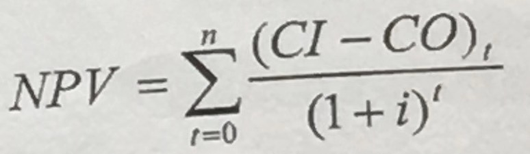

项目立项管理
考点精讲
项目立项是项目正式实施之前不可缺少的程序，一般要经过项目识别、项目机会研究、项目可行性研究、项目论证和评估等几个阶段。
项目立项管理
1、项目建议书
项目建议书，又称立项申请，是项目建设单位向上级主管部门提交项目申请时所必须的文件，是该项目建设筹建单位或项目法人，根据国民经济的发展、国家和地方中长期规划、产业政策、生产力布局、国内外市场、所在地的内外部条件、本单位的发展战略等等，提出的某一具体项目的建议文件，是对拟建项目提出的框架性的总体设想。
2、项目的可行性研究
为了避免盲目投资，降低投资风险，再决定一个信息新系统项目特别是一个大型复杂项目是否应该立项之前，需要对项目进行可行性研究。信息系统项目的可行性研究就是从技术、经济、社会和人员等方面的条件和情况进行调查和研究，对可能的技术方案进行论证，以最终确定整个项目是否可行。
初步可行性研究
初步可行性研究是在项目意向确定之后，对项目的初步估计。
详细可行性研究
详细可行性研究性需要对一个项目的技术、经济、环境及社会影响等进行深入调查研究，是一项费时、费力且需要一定资金支持的工作，特别是大型的或比较复杂的项目更是如此。
项目论证
项目论证是指对拟实施项目技术上的先进性、适用性，经济上的合理性、盈利性，实施上的可能性、风险可控性进行全面科学的综合分析，为项目决策提供客观依据的一种技术研究活动。“先论证，后决策”也是现代项目管理的基本原则。
项目评估
项目评估指在项目可行性研究的基础上，由第三方（国家、银行或有关机构）根据国家颁布的政策、法规、方法、参数和条例等，从项目或企业、国民经济、社会角度出发，对拟建项目建设的必要性、建设条件、生产条件、产品市场需求、工程技术、经济效益和社会效益等进行评价、分析和论证，进而判断其是否可行的一个评估过程。
3、成本效益分析--货币的时间价值
成本估算的目的是要求项目投资。但投资在前，取得效益在后。因此要考虑货币的时间价值。通常用利率表示货币的时间价值。
单利与复利
利息的计算公式分为单利和复利
单利
单利仅一本金为基准计算利息，即不论年限多长，每年均按原始本金为基数计算利息，以取得的利息不再计算利息。单利的计算公式为：
F = P × （1 + i × n）
上述公式中 p 表示原始本金，i 表示利率，n表示年限。
复利
复利计算以本金与累计利息之和为基数计算利息。复利的本利计算公式：
F = P × [（1 + i）的 n 次方]
上述公式中的 F 表示 P 元钱在 n 年后的价值
折现率与折现系数
折线也称贴现，就是把将来某一时点的资金额换算成现在时点的等值金额。折现时所使用的利率为折现率，也叫贴现率。
若 n 年后能收入 F 元，那么这些钱现在的价值即现值 P = F / [(1 + i) 的 n 次方]，其中 1 / [(1 + i) 的 n 次方] 成为折现系数。
净现值
净现值 Net Present Value ，NPV 是指项目在生命周期内各年的净现金流量，按照一定的、相同的贴现率贴现到初始的现值之和，计算公式：

其中（CI - CO) t 为第 t 年的净现金流量， CI 为现金流入，CO 为现金流出。i 为折现率或行业基准收益率。